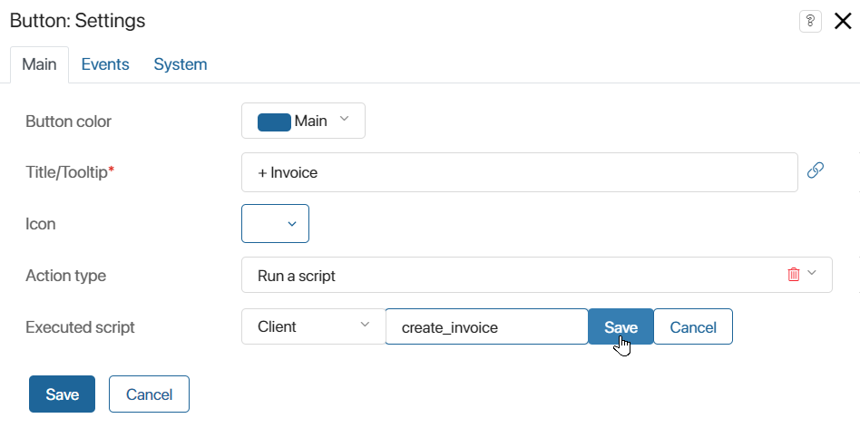

Опциональная зависимость — это механизм, позволяющий настраивать связь между компонентом (виджетом, модулем, бизнес‑процессом) и разделом или пользовательским модулем без жёсткой привязки. Это означает, что компонент может обращаться к объектам выбранного раздела или модуля через глобальную константу Imports, но его работоспособность не зависит от наличия этого раздела или модуля. Таким образом, опциональные зависимости обеспечивают гибкость и расширяемость при разработке и дистрибуции компонентов системы.
Ключевые особенности опциональной зависимости:
- опциональная зависимость работает в рамках скрипта, который получает доступ к другому разделу или модулю через уникальное имя, задаваемое для этого раздела или модуля;
- в скрипте компонента доступна глобальная константа
Imports. Эта константа позволяет в коде скрипта обращаться к объектам и функциям раздела или модуля, с которым установлена опциональная зависимость; - компоненты, использующие опциональные зависимости, можно экспортировать и импортировать между различными средами или компаниями без наличия связанных разделов или модулей в целевой среде. Это обеспечивает удобство переноса решений и их независимость от конкретных конфигураций системы;
- при отсутствии зависимого раздела или модуля в целевой системе связанные функции либо не активируются, либо можно настроить вывод сообщения об ошибке.
Примеры применения опциональной зависимости включают создание гибких бизнес-процессов, виджетов и других компонентов системы, которые могут взаимодействовать с разнообразными модулями и разделами, не требуя их обязательного наличия для функционирования основной логики. Это особенно важно для разработки расширяемых решений, где новые функции и модули могут добавляться по мере необходимости без переработки уже существующих компонентов.
Добавление опциональной зависимости
Когда вы настраиваете опциональную зависимость в скрипте, вы выбираете, к какому именно разделу или модулю хотите получить доступ, и присваиваете ему уникальное имя. Это имя затем используется в коде скрипта для обращения к функциям или данным выбранного раздела или модуля.
Подробнее о том, как создать опциональные зависимости в разных компонентах системы, читайте в статьях:
- для виджетов — «Вкладки дизайнера»;
- для бизнес-процессов — «Вкладка „Скрипты“»;
- в модулях:
- для действия типа Скрипт — «Скрипт»;
- для методов API — «Методы API в модулях»;
- для обработчика событий типа Запуск скрипта — «Обработка событий в модулях».
После добавления опциональной зависимости в скрипте доступна глобальная константа Imports. С её помощью можно обращаться к объектам выбранного раздела или пользовательского модуля.
Применение глобальной константы Imports
Когда вы добавляете опциональную зависимость, вы получаете доступ к глобальной константе Imports. Эта константа позволяет вам работать с объектами внутри раздела, например, с помощью скрипта добавить пользователя на портал или создать элемент приложения. Взаимодействовать с модулем можно при помощи настроенных в нём методов API и действий в бизнес‑процессах.
Пример использования включает вызов метода API, который находится в другом разделе системы:
if (Imports?.documents) {
let result = await Imports.documents.api.validate.call();
// ...
}
При написании скрипта учитывайте, что компонент с использованием константы Imports можно импортировать, даже если зависимость в компании не найдена. Рекомендуется добавить блок кода, который выполняется, если не удаётся обратиться к выбранному разделу или модулю. Например, чтобы выводить понятную для пользователя ошибку.
Кроме того, компонент со скриптом и раздел или модуль, с которым создана опциональная зависимость, можно экспортировать совместно в составе решения.
Подробнее об экспорте компонентов с глобальными константами читайте в статье «Глобальные константы в скриптах».
Совместимость решения с версиями системы, где не поддерживается Imports
function getImports() { |
Пример использования опциональной зависимости
Допустим, в компании есть раздел Платёжные документы с приложением Счета и раздел Документы с приложением Договоры. С карточки договора необходимо добавлять новые счета по нажатию кнопки.
Разделы входят в состав разных решений, их необходимо экспортировать по отдельности.
В этом случае можно привязать к кнопке запуск скрипта, создать для него опциональную зависимость и обращаться к приложению из другого раздела с помощью константы Imports. Для этого:
- Откройте карточку приложения Договоры в дизайнере интерфейсов и перейдите на вкладку Настройки > Доступные элементы.
- Напротив поля Опциональные зависимости (доступны в объекте Imports) нажмите + Добавить раздел и выберите раздел Платёжные документы.
- В колонке Псевдоним задайте для раздела уникальное имя, которое будет использоваться в скрипте, например,
payment_docs. - Перейдите на вкладку Шаблон и добавьте на форму кнопку с типом действия Скрипт. В поле Выполняемый скрипт создайте функцию, которая будет вызываться при нажатии кнопки.

- Откройте добавленную функцию на вкладке Скрипты и укажите:
async function create_invoice(): Promise<void> {
if (Imports?.payment_docs) {
const item = Imports.payment_docs.app.invoices.create();
// ...
await item.save();
}
}
- На верхней панели дизайнера интерфейсов нажмите Сохранить и Опубликовать, чтобы сделать изменения доступными для пользователей.
Теперь с карточки договора можно быстро создать новый счёт.
Вы можете экспортировать приложение Договоры, раздел Документы и решение, в состав которого они входят. Затем можно импортировать эти компоненты в другую компанию. Если в компании нет раздела, с которым создана опциональная зависимость, привязанный к кнопке скрипт не будет выполняться.